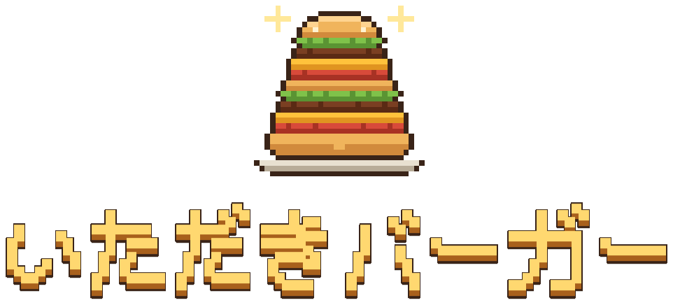
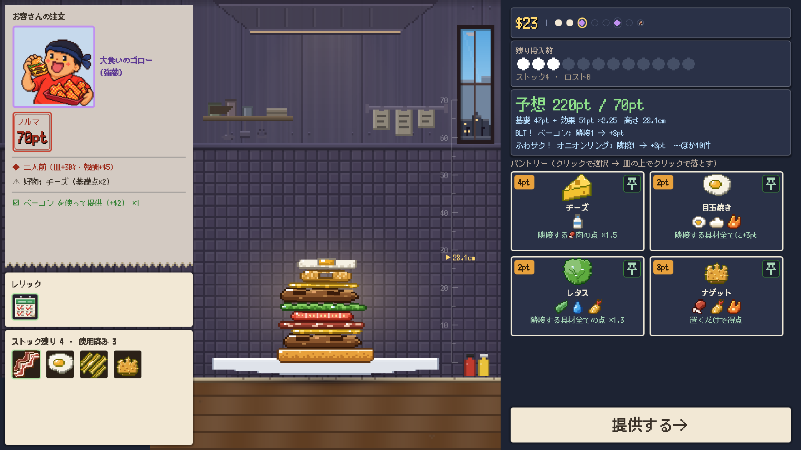
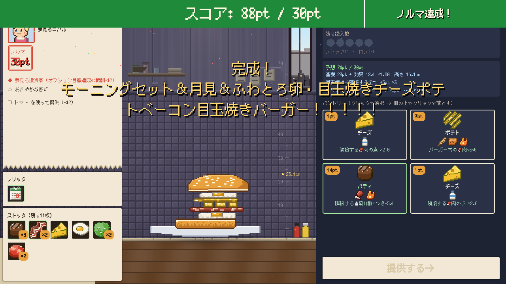
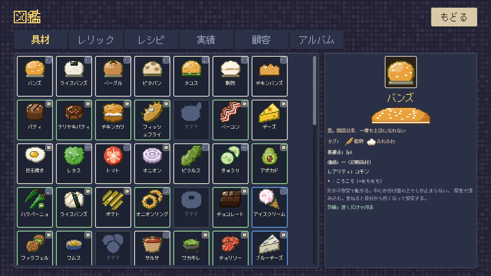

落とす！積む！挟んでシナジー！
物理で積み上げるハンバーガー・ローグライク
Steam でウィッシュリストに追加2026年 第4四半期 発売予定 ／ Windows (Steam)
どんなゲーム？
いただきバーガーは、ハンバーガーを物理で積み上げるデッキ構築ローグライクです。
あなたはバーガー店の店主。お客さんのノルマを満たすバーガーを、その場で組み立てて出します。ただし具材は物理で落ちる。狙って落とし、崩さず積み上げるのはあなたの腕次第。となり合った具材が次々と効果を連鎖させ、崩さず高く積むほど点が伸びます。
遊びの流れ

STEP 1
狙って落とす
手札の具材を皿の上に狙って落とす。具材は転がり、傾き、崩れる。どこに何を置くかで、次に乗せられるものが変わります。

STEP 2
挟んでシナジー
上バンズを乗せて提供すると採点。となり合う具材の効果が連鎖して点が跳ね上がります。ノルマに届かなければ、その場でゲームオーバー。

STEP 3
夜のフードトラック
お客さんを満足させるたびにフードトラックが開店。食材箱とレリックを買い、いらない食材を処分してデッキを育て、最後のボスに挑みます。
積み上げるもの
- 具材 90種以上加点・倍率・受け皿。効果はすべて「となり」に向く
- レシピ 30種以上特定の組み合わせで全体倍率。成立すれば新しい具材が解放される
- レリック 40種以上タグ全体を底上げする常設効果
- 店主 8人それぞれ専用バンズと初期デッキを持つ
- 個性の違う顧客たち好物・苦手・骨。同じ相手でも注文は毎回変わる
- 実績 70種以上図鑑とバーガーアルバムも収録
腕試し
店の格付け★0〜5 と「熟練シェフ」(投下位置が自動で往復する) で難度を上げられます。日替わりチャレンジと延長営業のスコアは Steam ランキングで競えます。
スクリーンショット
{kind=link}
{kind=link}
{kind=link}
{kind=link}
{kind=link}
ゲーム情報
- タイトル
- いただきバーガー
- 英語タイトル
- A Bun Above
- ジャンル
- 物理積み上げ × デッキ構築ローグライク
- 開発・販売
- NoZworks
- 対応機種
- PC (Steam) ／ Windows 10・11 (64bit)
- 発売日
- 2026年 第4四半期 予定
- 対応言語
- 日本語 / English / 简体中文 / 繁體中文 / 한국어 / Deutsch / Français / Español / Português (Brasil) / Русский
ウィッシュリストに入れて、発売を待とう
Steam ストアページへ